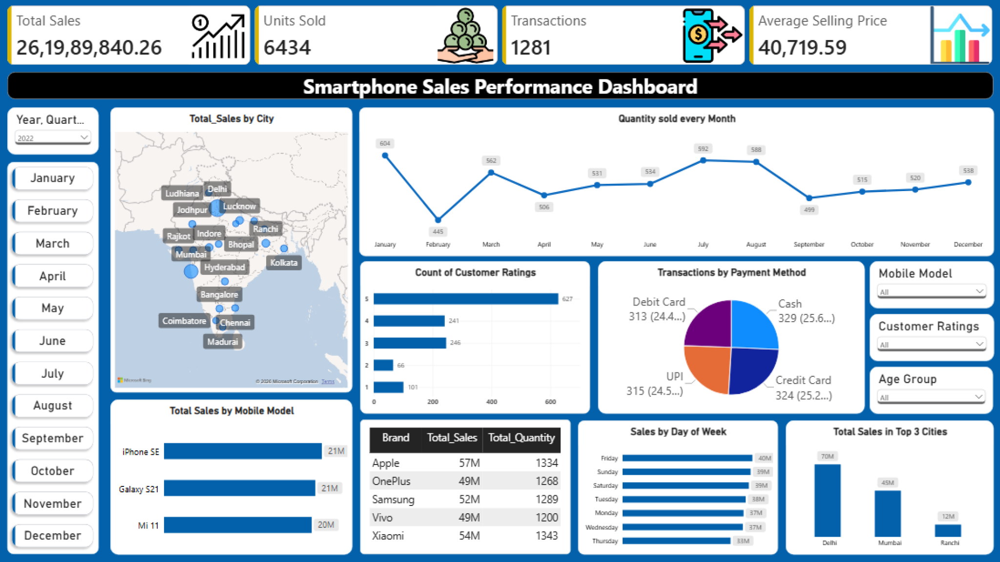

PROJECT / RETAIL ANALYTICS
Smartphone Sales Performance Dashboard
This Power BI project explores how smartphone sales changed across products, cities, and customer segments. It helps a sales manager review performance, identify where declines are concentrated, and decide what needs further investigation.
Tools
Power BI · Power Query · DAX
Data and dashboard
The dataset contains 3,835 transactions, covering five brands, 15 models, and 19 Indian cities, from October 2021 to October 2024. The analysis compares 2022 and 2023, as both are complete years. Currency is unspecified in the source.
The dashboard includes:
- Performance cards: Sales, units sold, transactions, and average selling price.
- Sales breakdowns: City map, brand table, and leading models.
- Time analysis: Monthly quantities and weekday sales.
- Customer analysis: Ratings and payment-method usage.
- Interactive filters: Time period, model, rating, and age group.
Sales are calculated as quantity multiplied by unit price. Average selling price uses total sales divided by total units, accounting for different transaction quantities.


Enlarge 2022 dashboard ↗ Enlarge 2023 dashboard ↗
Enlarge 2023 dashboard ↗Business questions and findings
1. How did overall performance change?
Sales fell from 261.99M to 253.31M, a 3.31% decline. Transactions remained stable, while units sold fell 1.09% and average selling price fell 2.25%.
The decline involved both fewer phones sold and lower sales value per phone. Further investigation should separate changes in product mix from price changes within models.
2. Which brands contributed most to the decline?
Xiaomi and Apple recorded combined sales losses of approximately 16.81M. OnePlus and Samsung added 8.22M, offsetting about 49% of those losses. OnePlus became the leading brand by sales value.
The priority is to investigate Xiaomi and Apple by model, city, quantity, and selling price.
3. How concentrated were sales geographically?
Delhi, Mumbai, and Ranchi remained the top three cities. Their combined sales fell from approximately 128M to 118M, while their share of total sales decreased from 48.9% to 46.6%.
Mumbai showed the largest decline among the three. Mumbai and Delhi should be reviewed first to identify affected brands and models.
City figures are approximate because dashboard labels were rounded to millions.
4. Which models led sales, and did the leaders change?
The top-three composition changed completely, with OnePlus taking two positions in 2023.
| Rank | 2022 | 2023 |
|---|---|---|
| 1 | iPhone SE | OnePlus Nord |
| 2 | Galaxy S21 | Galaxy Note 20 |
| 3 | Mi 11 | OnePlus 8T |
Model-level quantities and selling prices should be compared before recommending assortment changes. Ranking alone does not establish profitability or demand.
5. Which months contributed most to the volume decline?
August lost 88 units and January lost 59 units. Their combined reduction of 147 units was partly offset by gains across the remaining months, leaving an annual decline of 70 units.
Investigation should focus on these two months, followed by checks of stock availability and promotional activity if those records become available.
6. Did customer ratings deteriorate in particular segments?
The share of transactions rated 1-2 stars increased from 13.0% to 29.2%. The increase appeared across every brand and age group examined.
- Samsung: Largest brand-level increase, 18.9 percentage points.
- Vivo: Highest 2023 low-rating share, 32.3%.
- Ages 20–29: Largest age-group increase, from 12.0% to 31.8%.
- OnePlus Nord: Low-rating share rose despite strong unit growth.
The pattern warrants checking shared service processes and rating-collection practices, followed by targeted feedback analysis. Ratings alone cannot establish the cause.
7. How did payment-method usage change?
UPI’s transaction share increased from 24.59% to 27.08%, replacing cash as the most-used method. All four payment methods still represented roughly a quarter of transactions.
Maintaining payment choice is appropriate. Processing costs and failure rates should be examined before recommending changes. The age-group payment comparison was excluded because its figures were not fully verified.
Further scope
Additional analysis could support:
- Same-period comparisons across years, quarters, and months.
- Sales-change breakdowns by brand, model, and city.
- Separation of quantity, price, and product-mix effects.
- Rating trends with transaction counts visible.
- Integration of inventory, margins, returns, and customer feedback.
Conclusion
The analysis points to a sales decline concentrated in Apple, Xiaomi, and the leading cities, alongside a broad deterioration in recorded ratings. The dashboard provides a starting point for deciding where to investigate. Further operational data is needed to explain the causes and support business actions.